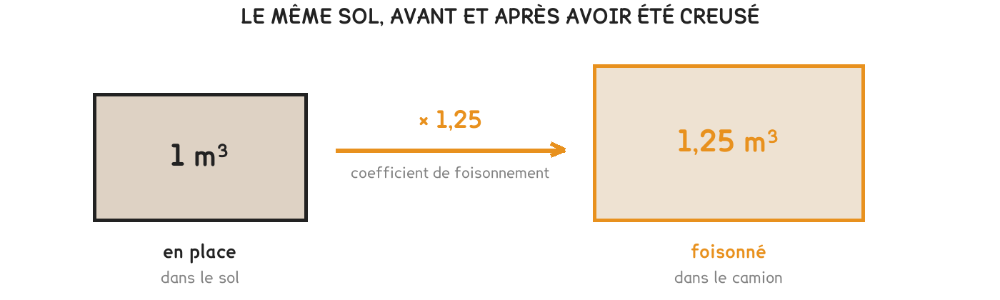

CAP · consolidation maths
On creuse un volume en place, on transporte un volume foisonné. Confondre les deux, c'est commander le mauvais nombre de camions.
4 questions · 6 exercices · 12 items d'entraînement · 1 repli · 1 figure
Savoirs travaillés

On creuse en place, on charge foisonné. Le trou se calcule avec les dimensions de la tranchée ; les camions se comptent avec le volume gonflé. Ce sont deux nombres différents, et il faut savoir lequel on manipule.
| En place | Le calcul | Foisonné |
|---|---|---|
| 1 m³ | 1 × 1,25 | 1,25 m³ |
| 10 m³ | 10 × 1,25 | 12,5 m³ |
| 40 m³ | 40 × 1,25 | 50 m³ |
| 8 m³ de sable, coefficient 1,15 | 8 × 1,15 | 9,2 m³ |
On compte les camions sur le volume en place. C’est l’erreur la plus chère de la fiche : sur une tranchée de 28,8 m³, elle fait annoncer 3 camions au lieu de 4. Le quatrième camion existe quand même, il arrive en fin de journée, et il n’était pas prévu.
Pour aller plus loin
On rencontre souvent la question dans l’autre sens : un camion de 10 m³ vide combien de mètres cubes de tranchée ?
Il ne faut pas multiplier par 1,25, mais diviser : 10 ÷ 1,25 = 8 m³ en place. Un camion de 10 m³ n’emporte donc que 8 m³ de trou.
C’est le même mécanisme que les pourcentages de la fiche 18 : ajouter 25 % puis vouloir revenir, ce n’est pas retirer 25 %, c’est diviser par 1,25, soit retirer 20 %.
Les mêmes séries que sur la feuille. On remplit chaque case, puis on vérifie la série entière d’un coup.
Série · PR
Série · PR
Série · PR
Une tranchée de 30 m de long, 0,80 m de large et 1,20 m de profondeur est creusée dans de la terre ordinaire, coefficient 1,25. Les camions ont une benne de 10 m³.
Exercice · GE
Quel volume de terre y a-t-il dans la tranchée, avant de creuser ?
Exercice · AA
Quel volume occupe cette terre une fois dans les bennes ?
Exercice · AA
Combien de camions faut-il prévoir ?
Exercice · AA
Un chef de chantier compte les camions sur le volume en place. Combien en annonce-t-il, et que se passe-t-il en fin de journée ?
Le chemin inverse, puis un second coefficient qui va dans l’autre sens.
Exercice · AA
Trois camions de 10 m³ partent pleins. Quel volume de tranchée ont-ils vidé ?
Exercice · AA
On remblaie ensuite avec 18 m³ de grave, une fois compactée. La grave se tasse de 15 % au compactage. Quel volume faut-il commander ?
Fiche de consolidation. Aucun corrigé ; rien n'est enregistré, rien n'est noté.